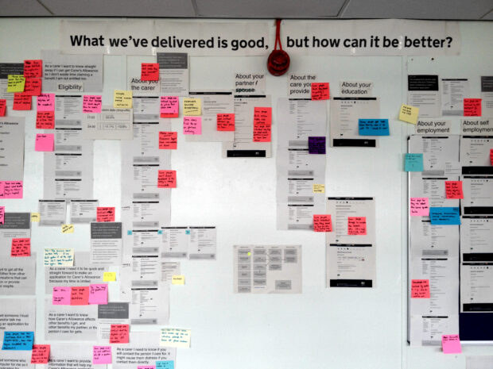
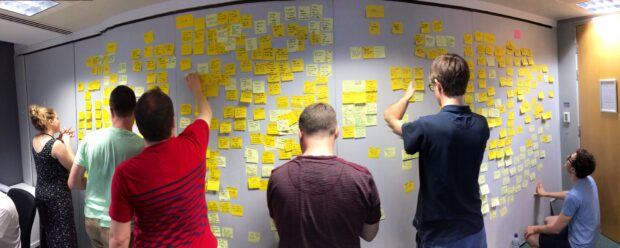
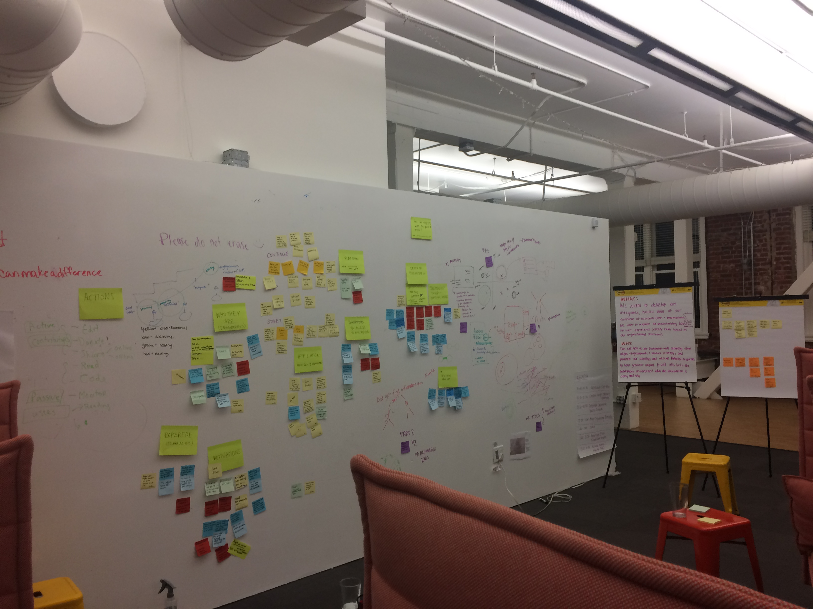
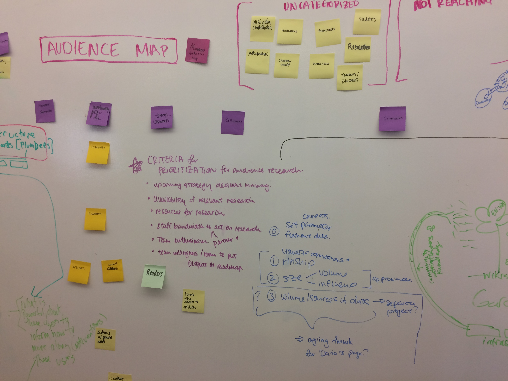

Evidence board
About
An evidence board is a documented photograph or scan of a physical research synthesis wall — showing printed interview transcripts, sticky notes, photographs, sketches, and colored threads or markers pinning observations together. Unlike a polished affinity map, the evidence board is raw and unresolved. It shows the research process in progress: the mess, the iteration, the physical scale of the data. In a portfolio context, it functions as proof of process — showing that synthesis happened at a human scale, collaboratively, before the clean insights were written.
When to use
Use an evidence board as a portfolio artifact when you want to show the research process itself rather than just its outputs. It is especially powerful in case studies where the volume and complexity of data is part of the story. It works best alongside a cleaner final synthesis deliverable — the board shows where you started, the clean output shows where you arrived.
When not to use
Do not use an evidence board as a standalone deliverable with clients or stakeholders — it communicates process to researchers, not decisions to decision-makers. It also requires that physical synthesis actually happened. Do not stage or reconstruct one.
References
Examples
Click any example to view full size and visit the original source.




